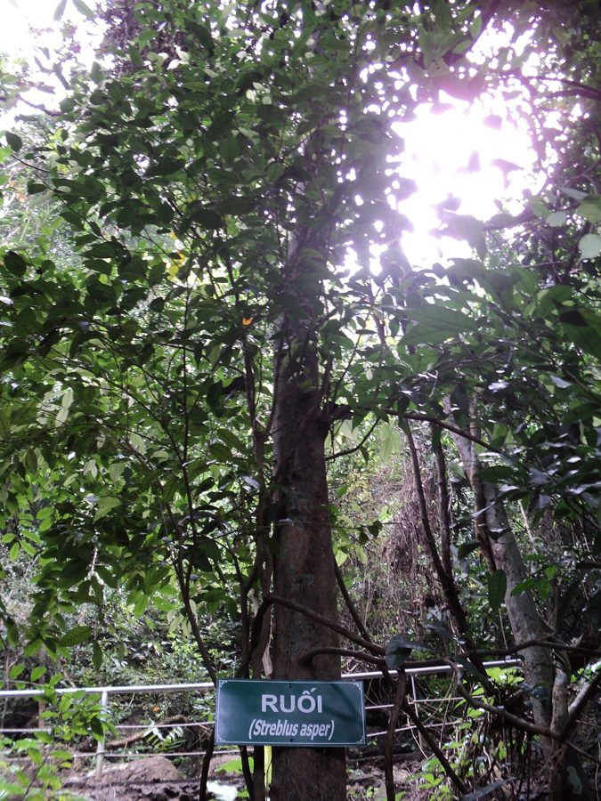

सिहोरSihor
Streblus asper · Moraceae · FLR-0127

- Scientific name
- Streblus asper Lour.
- Family
- Moraceae
- Hindi
- सिहोर
- Status here
- native
- IUCN
- not evaluated
- Review
- audited and independently read
When to look कब देखें
Present all year.
Uses and possibilities उपयोग और संभावनाएँ
“Traditional medicine” means a documented traditional use, not a claim that it works. Nothing on this page is medical advice.
Drawn from the documented uses in the profile below, where each is labelled traditional, current or a research lead. All uses →
सिहोर / Sihor
Streblus asper Lour. — Moraceae
सिहोर — एक छोटा, काँटेदार पेड़, गाँव की बाड़ों और सूखी ज़मीन पर उगता है। अपनी खुरदरी पत्तियों के लिए जाना जाता है, जिन्हें दाँत मलने के लिए भी इस्तेमाल किया जाता है ("दाँत साफ़ करने वाला पेड़")। पेड़ के छोटे, गोल, काले फल मीठे होते हैं और पशु-पक्षी खाते हैं। आयुर्वेद में इसे दाँतों की देखभाल के लिए अनुशंसित किया जाता है।
Quick Identification त्वरित पहचान
| Feature | Description |
|---|---|
| Size | Small deciduous tree or shrub, 3–8 m, armed with small spines |
| Leaves | Simple, alternate, elliptic to ovate, 4–8 cm, margins entire, rough above, softer beneath |
| Flowers | Small, greenish, clustered at leaf axils |
| Fruits | Small, round, fleshy drupes, 8–12 mm, black when ripe, edible |
| Bark | Greyish, with small spines and warty protuberances |
| The test | Rub a leaf across your teeth; the rough texture is distinctive |
Field tip: A small, spiny tree with rough leaves and tiny black fruits in a village grove or dry waste ground is sihor.
हिंदी — कैसे पहचानें: छोटा, काँटेदार, खुरदरी पत्तियाँ, छोटे काले मीठे फल।
Morphology आकारिकी
Biometrics:
| Measurement | Range |
|---|---|
| Height | 3–8 m |
| Trunk diameter | 10–30 cm |
| Leaf length | 4–8 cm |
| Leaf width | 2–4 cm |
| Fruit diameter | 8–12 mm |
Trunk and bark: Greyish, with small, scattered spines and corky warts. Wood hard, pale, not durable.
Leaves: Simple, alternate, elliptic to ovate, margins entire, scabrous above, milder beneath, short petiole.
Flowers: Small, greenish, in axillary clusters.
Fruits: Small, fleshy, round drupes, black at maturity, with thin flesh and a hard stone.
हिंदी: छोटी खुरदरी पत्तियाँ, छोटे काले फल, काँटेदार तना।
Behaviour & Ecology व्यवहार और पारिस्थितिकी
A small tree of dry scrub and deciduous woodland, drought-tolerant and found in poor soils. The small spines deter browsing animals; the fruit is eaten by birds and small mammals. In traditional practice, the rough leaves are used for cleaning teeth and gums.
हिंदी: सूखे की सहनशील, छोटा फल, दाँत साफ़ करने के लिए।
Life Cycle / Phenology जीवन चक्र
| Month / season | Event |
|---|---|
| April–June | Flowering |
| July–September | Fruiting through monsoon |
| October–November | Fruits ripen; eaten by birds |
| December–March | Deciduous; leaf fall |
Associated Species / Interactions संबंधित प्रजातियाँ
- Frugivores: Birds and small mammals eat the fruit.
Pests and Diseases कीट और रोग
- Minimal pests.
Agricultural / Human Relevance कृषि प्रासंगिकता
Traditional and Ethnobotanical Use (documented uses; not medical advice):
- Toothbrush. The rough leaves are traditionally rubbed across the teeth and gums to clean and massage them, a practice still observed in some communities.
- Medicinal. Listed in Kirtikar & Basu as a plant for oral and dental health.
- Fruit. The small fruits are edible and eaten fresh; not traded.
Today. The practice of using the leaves as a toothbrush is declining with commercial toothbrushes and toothpaste.
Research direction (a lead, not a result). The antimicrobial and abrasive properties of the leaves have been studied in dental research; modern validation is ongoing.
हिंदी: दाँत-पत्ती के नाम से जानी जाती है। फल खट्टे-मीठे खाए जाते हैं, बाज़ार में नहीं।
Expected Locally स्थानीय रूप से अपेक्षित
Not a field record. Written from published accounts for eastern Uttar Pradesh. No confirmed local sighting yet — if you have seen it, that is what the atlas needs.
अभी तक स्थानीय पुष्टि नहीं। यह विवरण प्रकाशित स्रोतों से है, किसी अवलोकन से नहीं।
To be expected in dry scrub and waste ground across the district.
Distribution वितरण
Global range: Native to South and South-east Asia; wild in dry deciduous forest.
In India: Widespread in the peninsula and the Gangetic plain.
In Uttar Pradesh: Scattered in dry areas.
In Basti district / eastern UP: Expected in dry scrub and village groves.
Research Questions शोध प्रश्न
Anyone can investigate these | कोई भी इन प्रश्नों की जाँच कर सकता है
- Is the leaf still used as a toothbrush in your village? / क्या आपके गाँव में इसकी पत्ती से दाँत माँजते हैं? — Ask elders.
- How many sihor plants are in the dry waste ground near your village? — Count and map.
- Does the fruit taste sweet or sour? — Taste and compare.
- Do birds prefer this fruit to other fruits? — Watch a fruiting tree.
Similar Species मिलती-जुलती प्रजातियाँ
| Species | How to tell apart | हिंदी |
|---|---|---|
| White Fig (Ficus virens) | No spines; larger, smoother leaves; larger fruits | काँटे नहीं, बड़े फल |
| Ber (Ziziphus mauritiana) | Leaves opposite, with thorns on branches; larger fruits | जोड़ों में पत्तियाँ, बड़े फल |
Field rule: A small, spiny tree with rough leaves and tiny black edible fruits is sihor.
Taxonomy & Classification वर्गीकरण
Original description. Described by João de Loureiro as Streblus asper in Flora Cochinchinensis (1790); the name has stood since. The epithet asper means "rough".
Subspecies. Monotypic.
Family and order placement. Moraceae, order Rosales. Streblus is a small genus of about 4 species.
IUCN status rationale. Not evaluated; widespread.
Photo Gallery फोटो गैलरी
Photos needed आवश्यक फोटो
- [ ] Whole tree (पूरा पेड़)
- [ ] Rough leaves close-up (खुरदरी पत्ती)
- [ ] Fruits on the tree (फल)
References संदर्भ
- Loureiro, J. de (1790). Flora Cochinchinensis, vol. 2. Lisbon. [original description]
- Hooker, J.D. (1875). The Flora of British India, vol. 5. L. Reeve, London. (Streblus)
- Kirtikar, K.R. & Basu, B.D. (1935). Indian Medicinal Plants, 2nd ed., vol. 2. Lalit Mohan Basu, Allahabad.
- Chopra, R.N., Nayar, S.L. & Chopra, I.C. (1956). Glossary of Indian Medicinal Plants. CSIR, New Delhi.
- GBIF Occurrence Data — Streblus asper, India (2026).
Source file: species/flora/trees/sihor.md